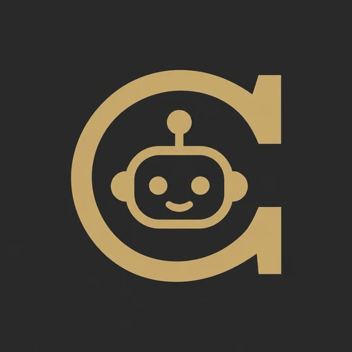

Free · Windows · macOS · Linux

Chronicle Sidekick
Install once.
Never hunt for a log again.
Your raid logs, sent to Chronicle in one click.
1
Install the app
It finds WoW for you
2
Install the addon
Logging turns on by itself
3
Raid, then upload
One click from your tray